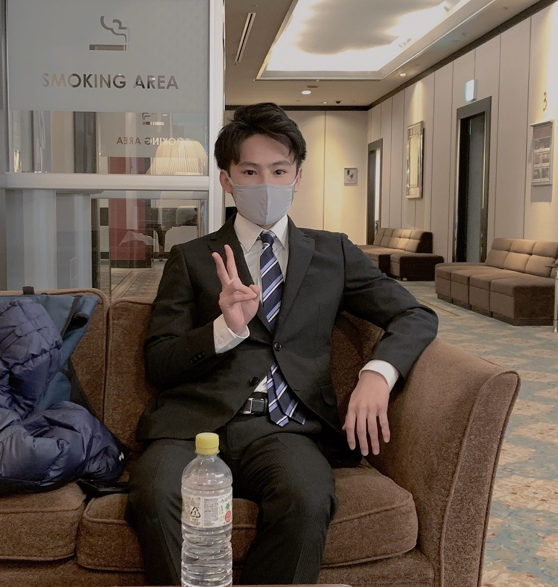
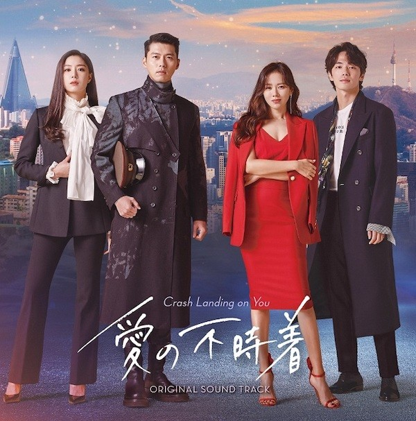
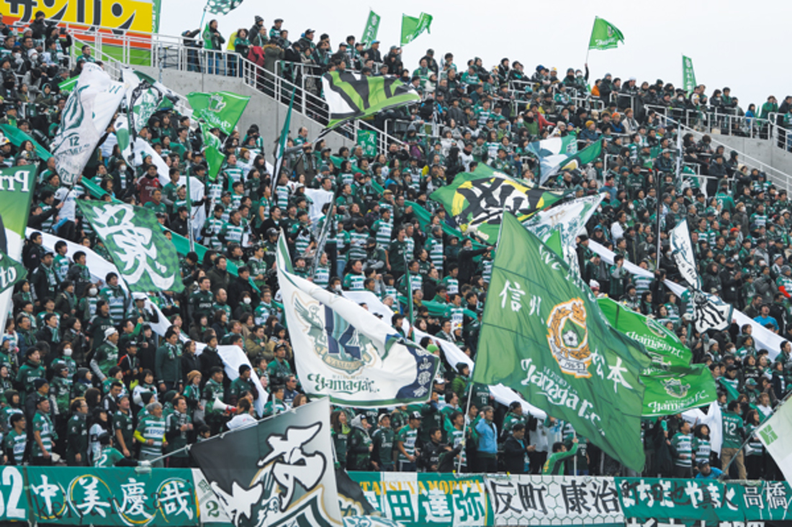

かけるってどんな人？
自己紹介
こんにちは！この記事を見てくださってありがとうございます。水野駆（みずのかける）と申します。この記事を読むことであなたはきっと"かける"のことをもっと深く知りたいと思うようになるでしょう！最後にクイズも用意したので挑戦してみてね！！
◎ 基本情報
・２０歳（２０００年１０月８日生まれ）
・群馬県明和町にて育つ（群馬県南部）
・四人兄弟の長男！（みんな男なのが驚かれるところ）
・現在は信州大学に在学していて、長野県長野市に住んでいる。

◎ 何を学んでる？
今は、工学部の情報系で勉強しています。なんで、この学科にしたかというと特に理由はなく受験で受かりやすかったところで選んでしまいました。。でも、この学科で勉強してみてプログラミングが楽しいって思えて、個人的にも何か学びたいなと思い、ギークサロンにも入会しました。将来はエンジニアになれたらいいかなーって最近思うようになりました。
◎ 趣味
趣味はＫ－ＰＯＰが好きなのと韓国ドラマが好きです。高３の受験期にたまたま目にしたＴＷＩＣＥにはまってしまったのがきっかけで今はＫ－ＰＯＰのガールズ中心に好きですねー。ボーイズもＢＴＳとＢＩＧＢＡＮＧは歌聞きますね。（ザ王道って感じですけど）韓国ドラマはハマったら二日くらいで見ちゃいます。だから、長期休み中にしかネットフリックスは登録しません。去年有名になった愛の不時着は絶対見てくださいね！！あ、あと少し韓国語話せます！

◎ アルバイト
今僕がしているのは、サッカーの試合運営スタッフです！松本市に山雅というＪ２のサッカーチームがあって、そのホームにて働いています。（ちなみに、一昨年はＪ１でした・・）僕は特にサッカーが好きなわけではないですが、この職場は大学生がとても多いのでサークルみたいな気分でやっています。ほかにも、たまにコンサートスタッフとかイベント系を中心にやったりします。
